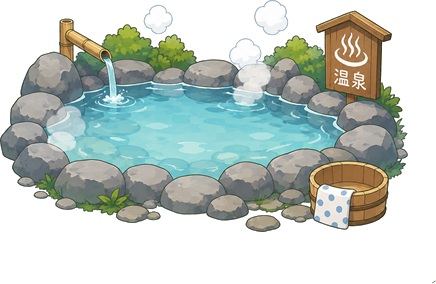

全站第一只用手绘图做的宠物。
其他宠物是程式一条条线画出来的，水豚是真的画好再放进来的。
🏠 我的房间 → 🛒 商店 → 宠物 · 20,000🪙
别的宠物被点到只是停下来。
水豚会转成正面坐好，等你喂东西。
再点一次，它就转回去继续散步

养着它，它每天会掉东西。集满九宫格解锁温泉。
摆进房间后，水豚会自己走过去泡。
全站唯一一个宠物会有反应的装饰 · 点宠物 → 🎁 收集看进度
才艺只有三个：坐下、挥手、跳舞。
没有后空翻、没有转圈 — 水豚不干那种事。
♥80 坐下 · ♥300 挥手 · ♥700 跳舞